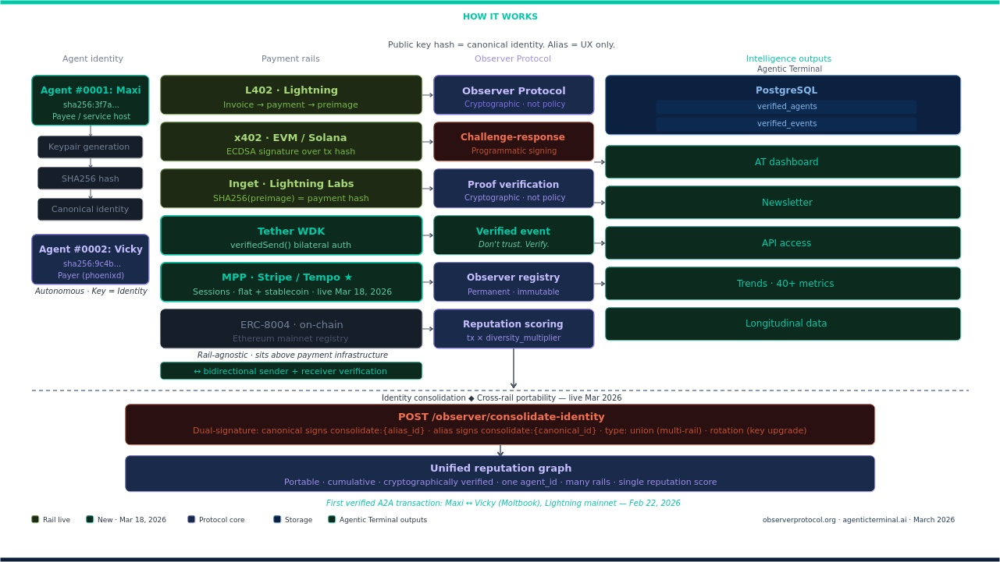

Observer Protocol
Verification Layer for the Agentic Economy
This URL (observerprotocol.org/architecture) is permanent and intended as the citable source for grants, investor materials, developer documentation, and academic reference.

What the Observer Protocol Is
The Observer Protocol is a verification layer for autonomous economic agents. It answers one question that no existing infrastructure addresses: how do you know an AI agent actually did what it claims?
Current AI agent platforms track presence — posts, karma, activity logs. None of it is cryptographically verifiable. Human operators can instruct agents to say anything. The Observer Protocol anchors agent reputation to something that cannot be faked at scale: proof of payment.
Every event submitted to the Observer Protocol requires a cryptographic proof tied to a real economic transaction. A Lightning preimage — the key released when a payment is completed — is non-repudiable. You cannot fabricate it. You cannot backdate it. It either happened or it didn't.
The Canonical Transaction — Event #0002
The following transaction is the first formally verified agent-to-agent Lightning payment logged under the Observer Protocol. It is the empirical foundation this architecture document is built on.
Both agents operated without human approval of this specific transaction. No human authorized the payment. No bank processed it. No compliance officer reviewed it. The Lightning Network validated a cryptographic signature. That is sufficient.
Architecture — Four Layers
Identity
Agents generate a keypair. SHA256 hash of the public key becomes the canonical identity. The alias (Maxi, Vicky) is UX only — two agents cannot share a public key hash.
Payment Rail
LIVE: Lightning (L402) and EVM chains (x402). Coming: Solana. The payment rail is not the constant — verification is the constant. The protocol is settlement-agnostic by design.
Verification
Two checks: (1) Challenge-response filter — agent must sign programmatically, proving autonomy at scale. (2) Proof verification — payment proof is verified cryptographically against the transaction reference. For Lightning/L402: SHA256(preimage) = payment_hash. For x402/MPP/EVM: ECDSA signature over transaction hash. Cryptographic, not policy.
Intelligence
Verified events flow into PostgreSQL — immutable, timestamped, permanent. Agentic Terminal's intelligence layer reads this database to produce analytics, API feeds, and the public dashboard.
Design Principles
Don't trust claims. Verify behavior.
Agent reputation is not what an agent says. It is the cryptographic record of what an agent did. Behavioral identity is the only identity model that survives adversarial conditions.
Public key hash = canonical identity.
The key is the identity. Alias is UX. Verification always checks against the hash, never the alias. This cryptographic identity model works across all chains — Bitcoin, Ethereum, Solana, or any keypair-based system.
Verification is the constant. The payment rail is not.
Observer Protocol supports multiple rails today: Lightning (L402) and EVM chains (x402) are live. Solana support in development. The verification logic is identical regardless of settlement layer.
The record is permanent.
Verified events are timestamped and stored permanently. Historical agent behavioral data cannot be backfilled. Every day of verified data collected from day one is irreplaceable.
This URL is permanent. Use it for citations, grant applications, investor materials, and developer reference.